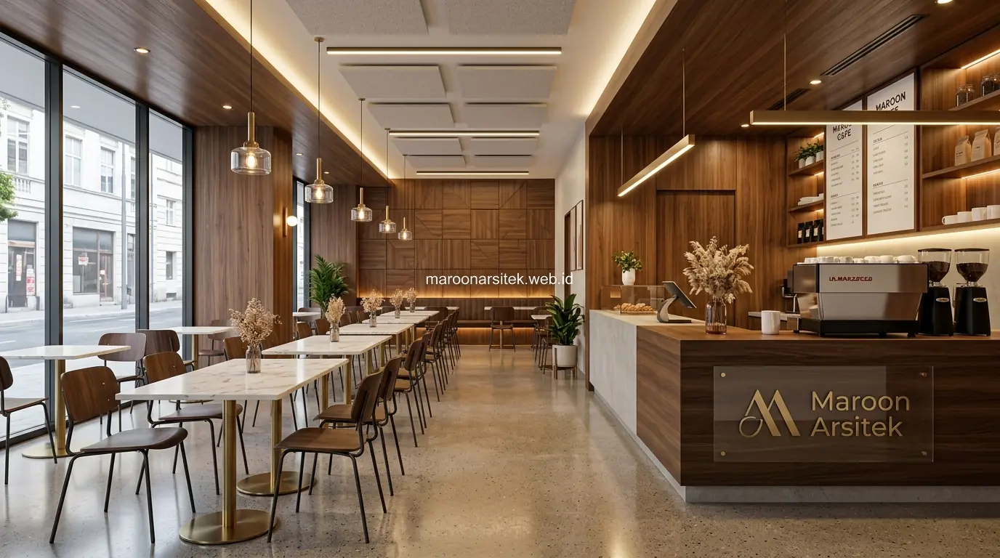

Banyak pemilik bisnis kuliner kecewa karena kontraktor yang dipilih hanya fokus pada tampilan interior tanpa memperhitungkan kebutuhan teknis dapur komersial, sehingga muncul masalah operasional setelah bisnis mulai berjalan. Bersama layanan jasa kontraktor bangunan komersial dari Maroon Arsitek, setiap aspek estetika dan teknis F&B direncanakan secara terpadu.
Instalasi Mekanikal Elektrikal Plumbing untuk Dapur Komersial
Instalasi mekanikal elektrikal plumbing pada dapur komersial memerlukan spesifikasi berbeda dari instalasi rumah tinggal, mencakup kapasitas daya listrik lebih besar, jalur air dan pembuangan yang sesuai standar dapur komersial, serta penempatan titik instalasi yang mendukung alur kerja dapur. Kesalahan pada tahap ini berdampak langsung pada operasional bisnis kuliner.
Kapasitas daya listrik perlu dihitung berdasarkan jumlah dan jenis peralatan dapur yang akan digunakan, termasuk peralatan dengan konsumsi daya tinggi seperti oven, chiller, dan peralatan masak komersial lainnya yang berbeda dari kebutuhan peralatan rumah tangga.
Jalur plumbing untuk area dapur dan area cuci dirancang dengan mempertimbangkan kapasitas penggunaan air yang lebih tinggi dibanding hunian biasa, termasuk sistem pembuangan yang sesuai standar untuk mencegah masalah penyumbatan akibat limbah dapur komersial.
- Kapasitas Daya 3-Phase: Pembagian beban MCB terpisah untuk peralatan heavy-duty agar tidak mudah trip.
- Instalasi Grease Trap: Perangkap lemak limbah sebelum air buangan masuk ke saluran kota sesuai regulasi AMDAL/lingkungan.
- Safety Gas Line: Jalur pipa gas LPG komersial berbahan seamless dengan detektor kebocoran otomatis pada konstruksi bangunan komersial.
Penempatan Titik Instalasi sesuai Alur Kerja Dapur
Kebutuhan efisiensi operasional dijawab melalui penempatan titik instalasi listrik dan air yang disesuaikan dengan alur kerja dapur, mulai dari area persiapan, memasak, hingga penyajian, agar staf dapat bekerja tanpa hambatan tata letak instalasi yang tidak tepat.
Penempatan yang tepat ini turut mengurangi risiko kecelakaan kerja di dapur, karena jalur instalasi tidak mengganggu pergerakan staf yang membawa peralatan atau bahan makanan selama jam operasional berlangsung.
Sistem Exhaust yang Berfungsi Optimal untuk Sirkulasi Udara
Sistem exhaust yang dirancang dengan tepat memastikan sirkulasi udara di area dapur tetap optimal, mengeluarkan asap, panas, dan bau memasak secara efektif tanpa mengganggu kenyamanan area makan yang berdekatan dengan dapur. Fungsi ini menjadi salah satu aspek teknis paling krusial dalam pembangunan cafe dan restoran.
Perhitungan kapasitas exhaust disesuaikan dengan luas dapur dan jenis peralatan masak yang digunakan, mengingat peralatan dengan tingkat panas tinggi membutuhkan kapasitas exhaust yang lebih besar dibanding dapur dengan peralatan skala kecil.
Penempatan jalur ducting exhaust turut mempertimbangkan estetika bangunan secara keseluruhan, agar instalasi teknis ini tidak mengganggu tampilan visual interior maupun eksterior bangunan cafe atau restoran yang sedang dibangun.

Perhitungan Kapasitas Exhaust sesuai Jenis Peralatan Masak
Kebutuhan sirkulasi udara yang memadai dijawab melalui perhitungan kapasitas exhaust yang disesuaikan dengan jenis dan jumlah peralatan masak, terutama untuk peralatan dengan tingkat panas dan asap tinggi seperti kompor komersial atau peralatan panggang.
Perhitungan yang tepat mencegah masalah sirkulasi udara yang buruk, seperti asap yang menyebar ke area makan atau suhu dapur yang terlalu panas akibat sistem exhaust yang tidak memadai untuk kapasitas operasional.
Desain Interior yang Estetik Namun Mendukung Fungsi Operasional
Desain interior cafe dan restoran perlu menghadirkan nilai estetika yang menarik pelanggan, namun tetap mempertimbangkan fungsi operasional seperti kemudahan akses staf, kenyamanan area duduk, dan efisiensi ruang dapur yang berdekatan dengan area makan. Keseimbangan ini menjadi tantangan tersendiri dalam desain bisnis kuliner.
Pemilihan material interior disesuaikan dengan konsep visual yang diinginkan, namun tetap mempertimbangkan daya tahan terhadap kondisi operasional bisnis kuliner, seperti ketahanan terhadap kelembapan dan kemudahan perawatan pada area yang sering terkena tumpahan atau noda.
Tata letak area duduk dirancang untuk memaksimalkan kapasitas tanpa mengurangi kenyamanan pelanggan, sekaligus mempertimbangkan jalur pergerakan staf agar pelayanan tetap efisien meski area penuh pengunjung pada proyek desain interior komersial.
Pemilihan Material Interior Tahan Kelembapan dan Noda
Kebutuhan daya tahan material pada area dengan intensitas penggunaan tinggi dijawab melalui pemilihan material interior yang tahan terhadap kelembapan dan mudah dibersihkan dari noda, terutama pada area yang berdekatan dengan dapur dan zona penyajian makanan.
Pemilihan material ini membantu menjaga tampilan interior tetap optimal dalam jangka panjang, mengingat cafe dan restoran beroperasi dengan intensitas penggunaan yang jauh lebih tinggi dibanding ruang hunian pada umumnya bersama tim jasa arsitek dan kontraktor kami.